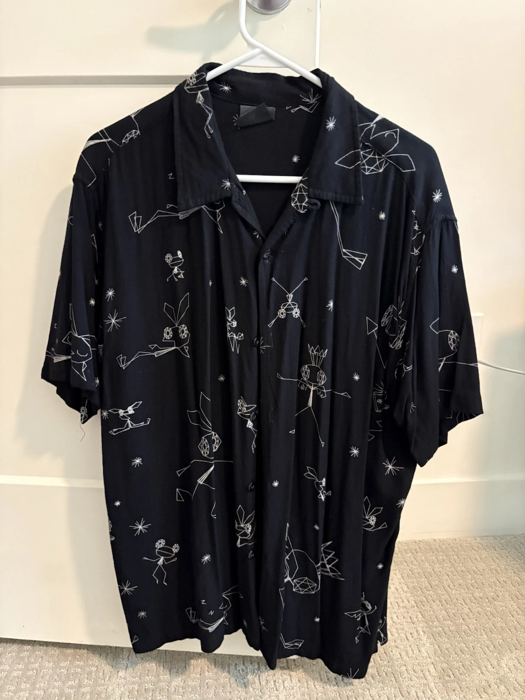
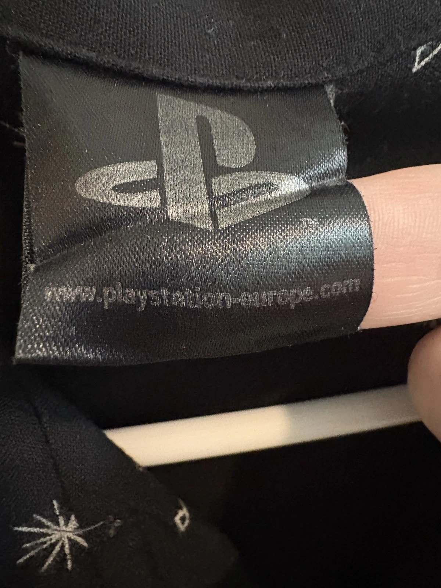

Merchandise
Vib-Ribbon's cult following has left behind a small but devoted trail of collectibles — from Japanese store-exclusive goods to the kind of fan-made oddities only a game about a four-line rabbit could inspire. This is a home for that stuff: figures, plush, apparel, stationery, and whatever else Vibri has ended up printed on over the years.
Vib-Ribbon Crystal Sculpture (Masaya Matsuura)
The rarest piece of Vib-Ribbon merchandise is barely "merch" at all — it's a fine-art collectible. To commemorate the game, series creator Masaya Matsuura and his studio NanaOn-Sha produced a hand-signed crystal glass statuette of Vibri, rendered as a clear, faceted sculpture that catches the light in the same spare, vector-line spirit as the game itself. Only 50 originals were ever made, each signed by Matsuura, making it one of the most sought-after objects in any Vib-Ribbon collection.
The sculpture stands roughly 18 cm tall and about 5 cm wide, translating Vibri's flat, four-stroke silhouette into a three-dimensional crystal form. It has been offered through the Dutch game-art gallery Cook & Becker, who at the time of writing listed just 9 of the original 50 pieces as still available — a reminder of how thin on the ground genuine Vib-Ribbon collectibles really are.


Images and details courtesy of Cook & Becker.
Vib-Ribbon Hawaiian Shirt (2000)
Some of the best evidence that this shirt existed at all comes straight from the source. The screen below is lifted from the original Vib-Ribbon website, where Sony ran a giveaway around the European launch: a "vib ribbon competition" teased as opening shortly, offering ten of the shirts as prizes for answering a gently silly multiple-choice question about the game. The styling is pure turn-of-the-millennium PlayStation — a model in wraparound shades posed against an electric magenta block, letting the black shirt and its scribbly white cast do the talking.

What makes the piece more than a novelty is who made it. The promo credits London designer Daniel Poole with the shirt, and it was produced as genuine PlayStation Europe apparel rather than a bootleg — the surviving example below still carries a glossy PlayStation woven label printed with www.playstation-europe.com at the collar. Instead of the usual palm trees, the "Hawaiian" print is a scattered field of Vibri and her devolved forms — the rabbit, the frog, the worm — drawn in the game's exact white vector line, punctuated with little stars and faceted shapes across a matte black rayon body.


